Manual do Administrador
Cadastrar Turma
1. Na Seção 2, na parte intitulada “Dados do Representante”, localize o card “Selecione a sua turma” e clique duas vezes sobre ele com o mouse para abrir a lista de opções disponíveis.
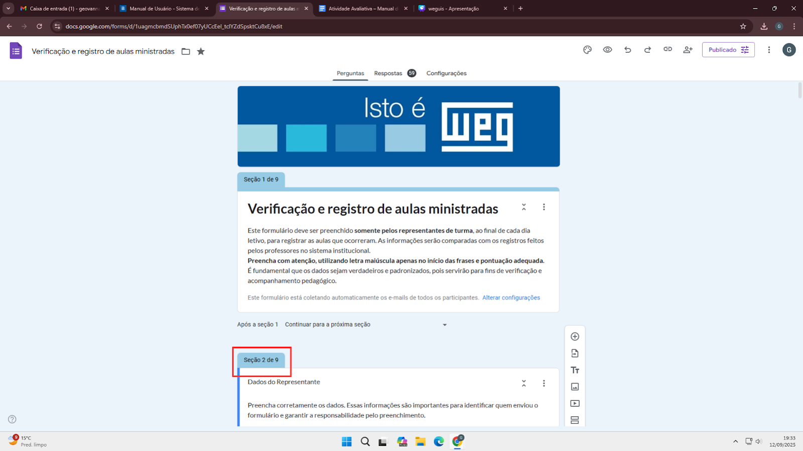2. Desça até o final do card e clique em “Adicionar opção”, inserindo o nome da turma que deseja adicionar.
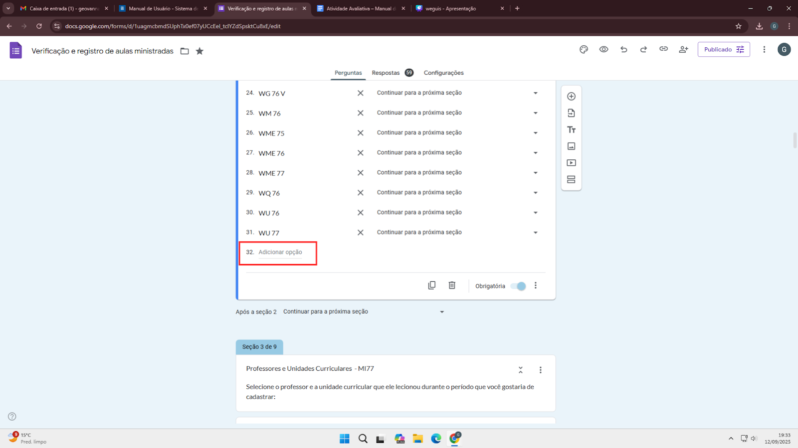3. Após incluir a nova turma, prossiga para criar uma nova seção no formulário, clicando no botão destacado.
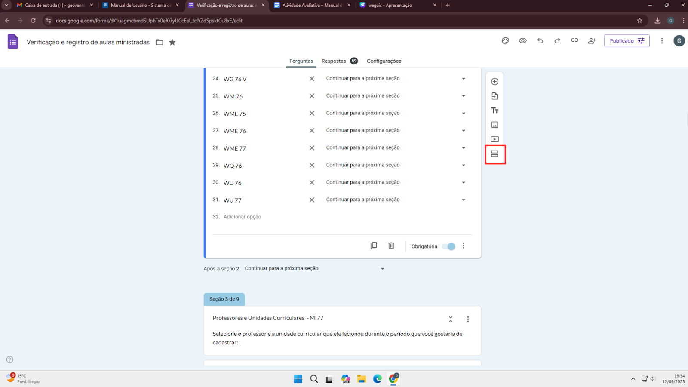4. Nomeie a nova seção como “Professores e Unidades Curriculares – (Nome da turma recém-criada)”.
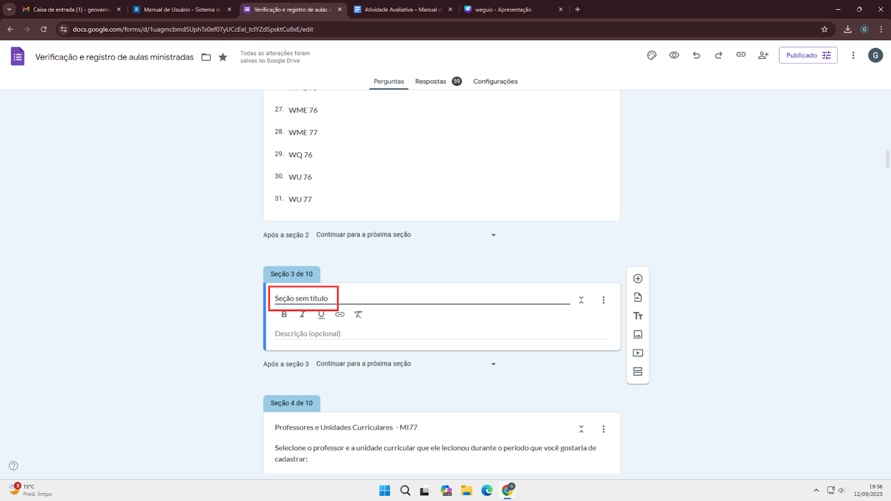5. Adicione a descrição da seção: “Selecione o professor e a unidade curricular que ele lecionou durante o período que você gostaria de cadastrar:”.
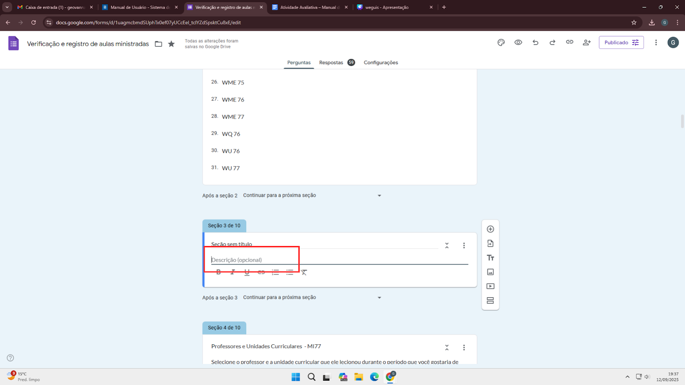6. Volte ao card “Selecione a sua turma”, clique duas vezes sobre ele e clique em “Continuar para a próxima seção”.
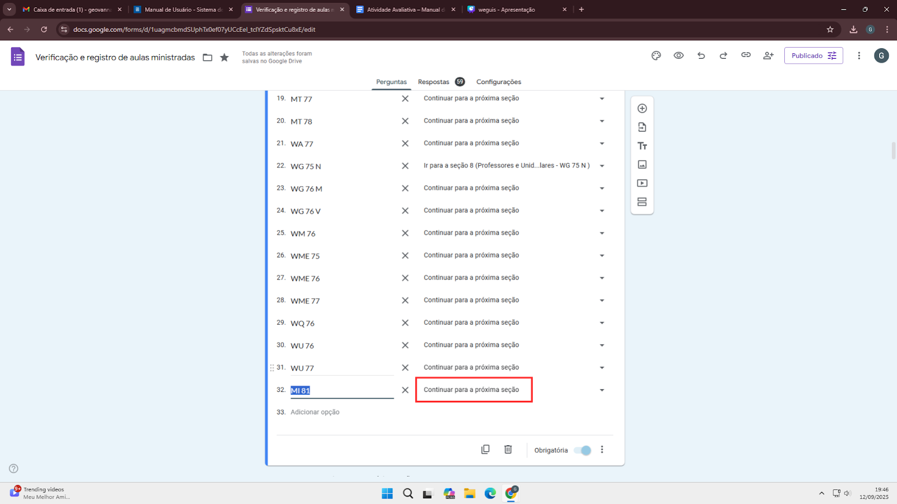7. Selecione a seção recém-criada para a turma nova; por exemplo: “Ir para a seção 3 (Professores e Unidades Curriculares – MI81)”.
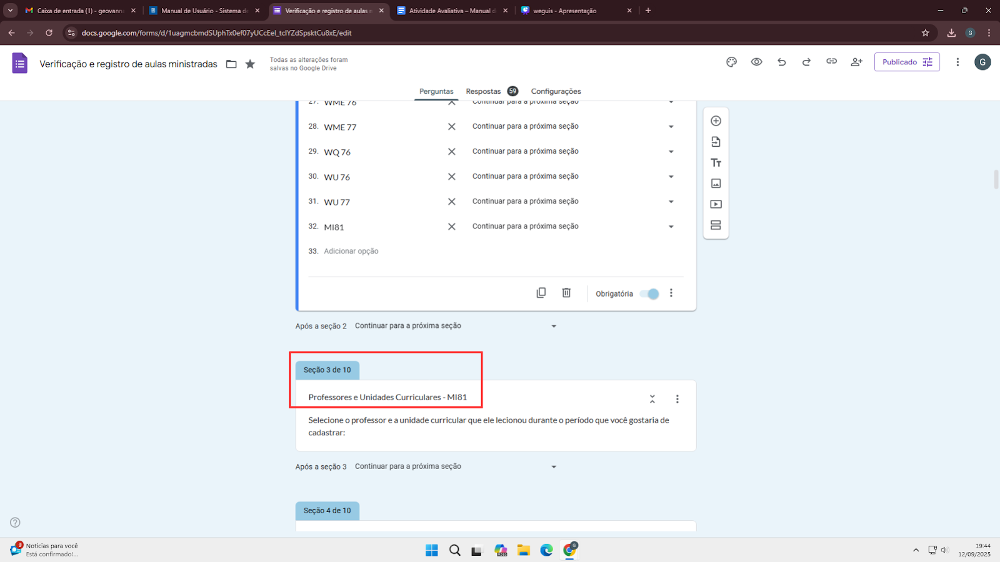8. Edite a seção “Professores e Unidades Curriculares” da turma recém-criada. Clique no símbolo de adicionar pergunta para criar um card que permitirá ao representante selecionar o professor responsável pela aula.
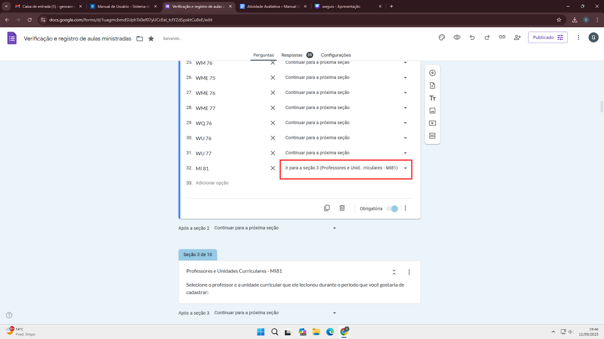9. Insira a pergunta “Selecione o nome do professor:” e, abaixo, liste todos os nomes dos professores para seleção.
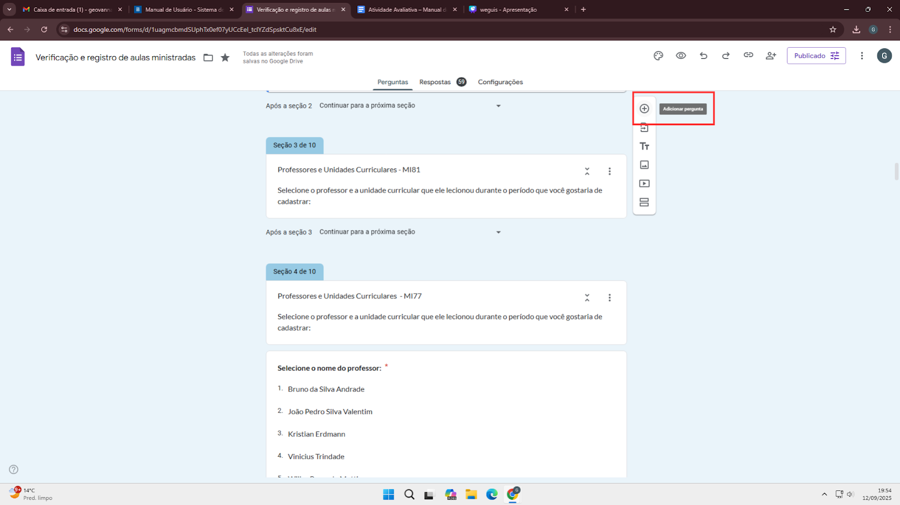10. Duplique o card “Selecione o nome do professor” para criar o card “Selecione a unidade curricular”.
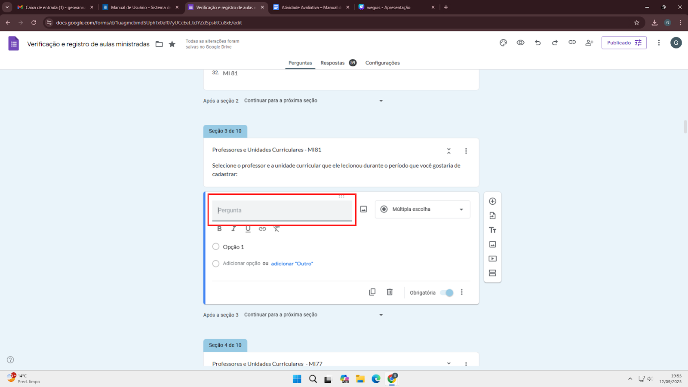11. Troque o título do card para “Selecione a unidade curricular:” e substitua os tópicos pelos nomes das unidades curriculares da turma.
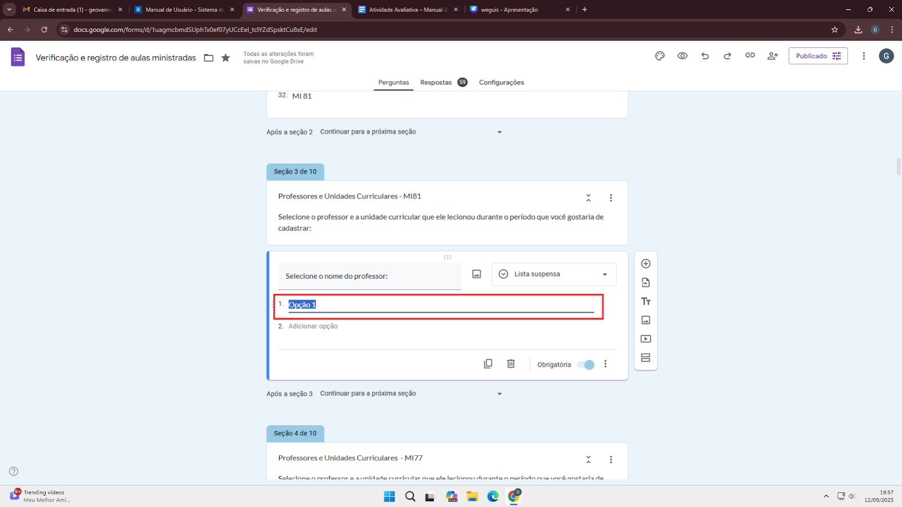12. Crie a seção “Frequência dos Alunos – (nome da turma recém-criada)” para registrar presença e ausência.
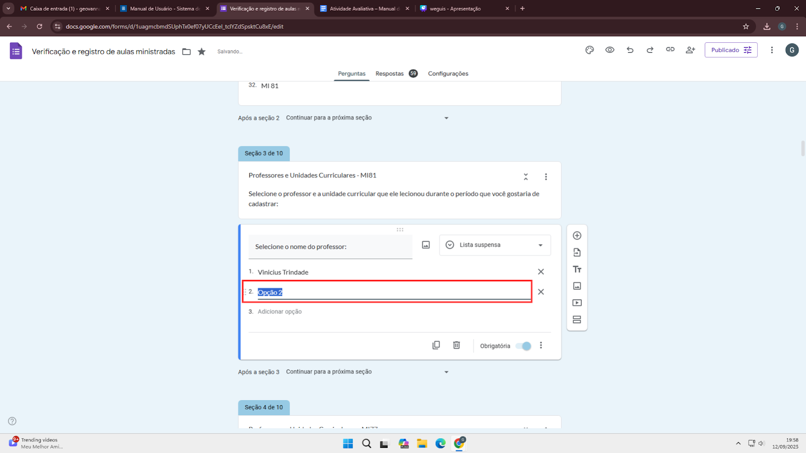13. Insira a pergunta “Indique a situação de cada aluno, se esteve presente ou faltante” usando o tópico de grade de múltipla escolha.
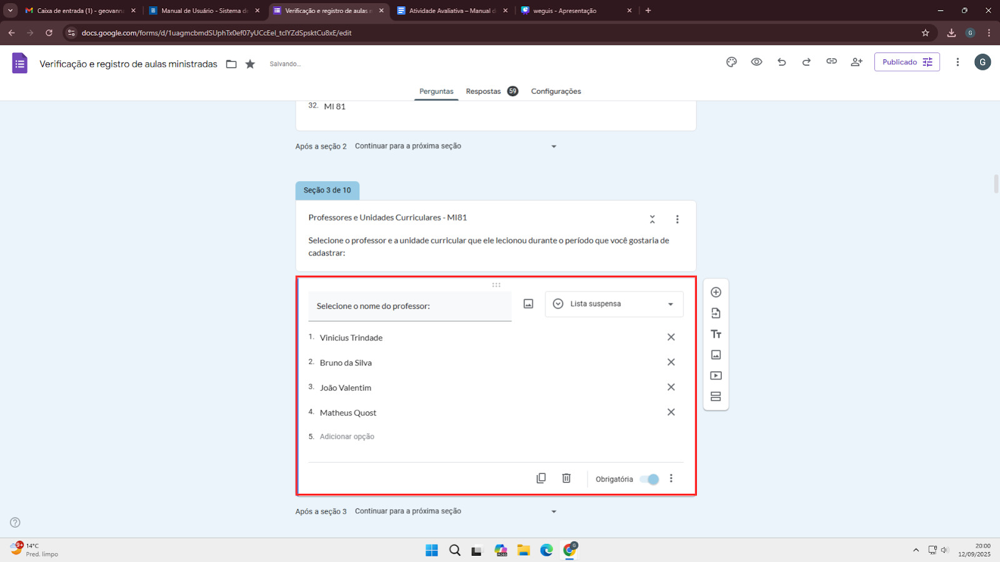14. Configure as colunas da grade: “Presente” e “Faltante”. Adicione os nomes dos alunos nas linhas correspondentes.
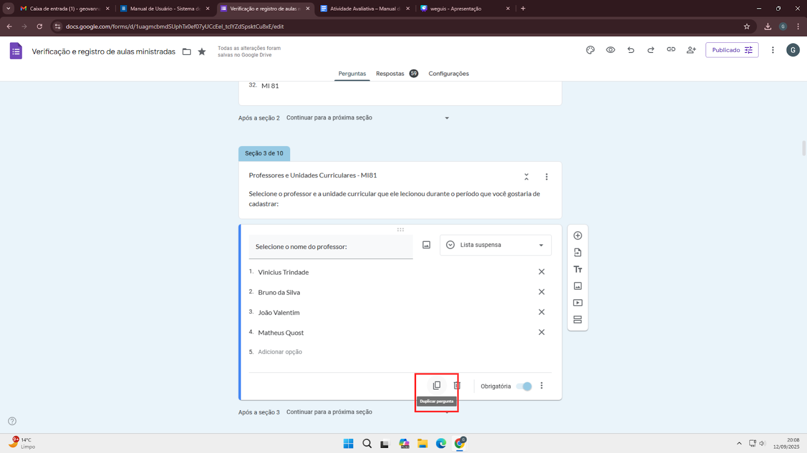15. Após adicionar todos os nomes, clique em “Continuar para a próxima seção” e selecione “Ir para a seção cadastrar aula”, garantindo que o representante será direcionado corretamente.
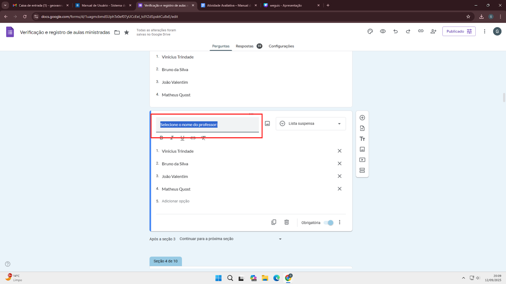Visualizar Turmas
O administrador pode acessar a lista de turmas cadastradas e visualizar os dados organizados em planilhas específicas para cada turma.

Gerar Relatórios
O administrador pode gerar relatórios com os dados das turmas, exportando-os para planilhas para análise e acompanhamento.